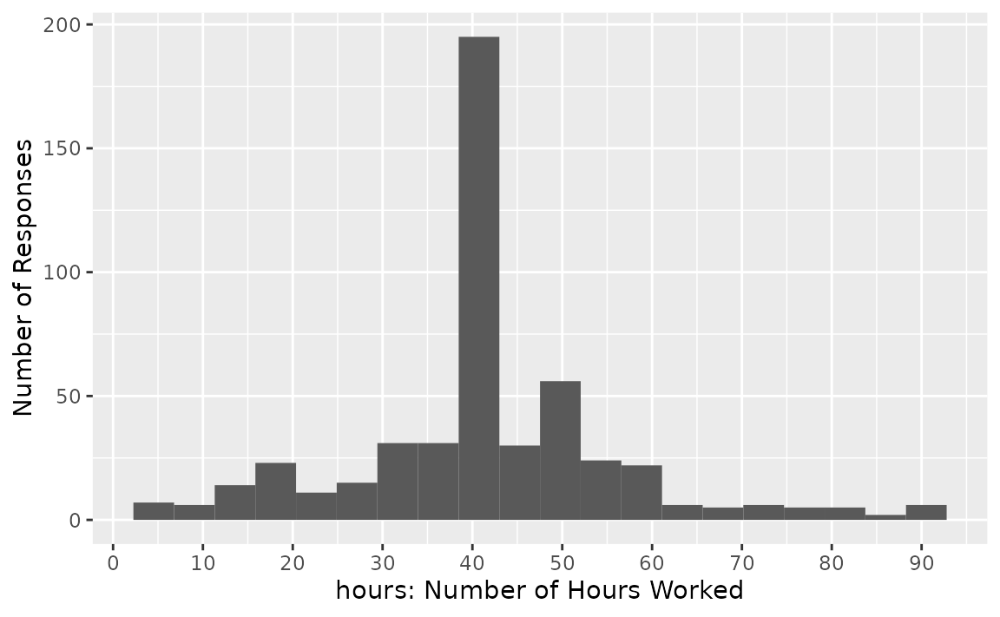
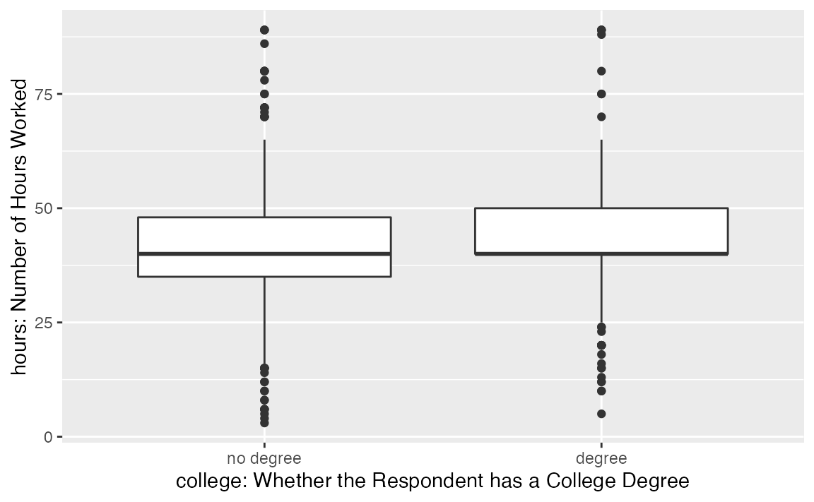
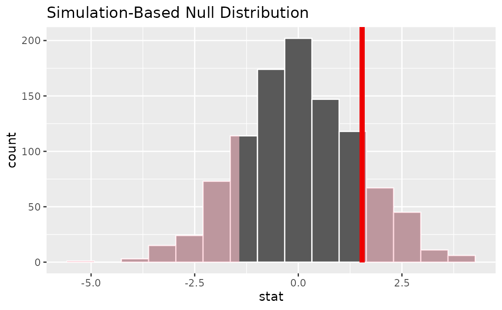

Introduction
In this vignette, we’ll walk through conducting
-tests
and their randomization-based analogue using infer. We’ll start out with
a 1-sample
-test,
which compares a sample mean to a hypothesized true mean value. Then,
we’ll discuss 2-sample
-tests,
testing the difference in means of two populations using a sample of
data drawn from them. If you’re interested in evaluating whether
differences in paired values (e.g. some measure taken of a person before
and after an experiment) differ from 0, see
vignette("paired", package = "infer").
Throughout this vignette, we’ll make use of the gss
dataset supplied by infer, which contains a sample of data from the
General Social Survey. See ?gss for more information on the
variables included and their source. Note that this data (and our
examples on it) are for demonstration purposes only, and will not
necessarily provide accurate estimates unless weighted properly. For
these examples, let’s suppose that this dataset is a representative
sample of a population we want to learn about: American adults. The data
looks like this:
dplyr::glimpse(gss)## Rows: 500
## Columns: 11
## $ year <dbl> 2014, 1994, 1998, 1996, 1994, 1996, 1990, 2016, 2000,…
## $ age <dbl> 36, 34, 24, 42, 31, 32, 48, 36, 30, 33, 21, 30, 38, 4…
## $ sex <fct> male, female, male, male, male, female, female, femal…
## $ college <fct> degree, no degree, degree, no degree, degree, no degr…
## $ partyid <fct> ind, rep, ind, ind, rep, rep, dem, ind, rep, dem, dem…
## $ hompop <dbl> 3, 4, 1, 4, 2, 4, 2, 1, 5, 2, 4, 3, 4, 4, 2, 2, 3, 2,…
## $ hours <dbl> 50, 31, 40, 40, 40, 53, 32, 20, 40, 40, 23, 52, 38, 7…
## $ income <ord> $25000 or more, $20000 - 24999, $25000 or more, $2500…
## $ class <fct> middle class, working class, working class, working c…
## $ finrela <fct> below average, below average, below average, above av…
## $ weight <dbl> 0.8960, 1.0825, 0.5501, 1.0864, 1.0825, 1.0864, 1.062…1-Sample t-Test
The 1-sample -test can be used to test whether a sample of continuous data could have plausibly come from a population with a specified mean.
As an example, we’ll test whether the average American adult works 40
hours a week using data from the gss. To do so, we make use
of the hours variable, giving the number of hours that
respondents reported having worked in the previous week. The
distribution of hours in the observed data looks like
this:

It looks like most respondents reported having worked 40 hours, but there’s quite a bit of variability. Let’s test whether we have evidence that the true mean number of hours that Americans work per week is 40.
infer’s randomization-based analogue to the 1-sample -test is a 1-sample mean test. We’ll start off showcasing that test before demonstrating how to carry out a theory-based -test with the package.
First, to calculate the observed statistic, we can use
specify() and calculate().
# calculate the observed statistic
observed_statistic <- gss |>
specify(response = hours) |>
calculate(stat = "mean")The observed statistic is 41.382. Now, we want to compare this statistic to a null distribution, generated under the assumption that the mean was actually 40, to get a sense of how likely it would be for us to see this observed mean if the true number of hours worked per week in the population was really 40.
We can generate() the null distribution using the
bootstrap. In the bootstrap, for each replicate, a sample of size equal
to the input sample size is drawn (with replacement) from the input
sample data. This allows us to get a sense of how much variability we’d
expect to see in the entire population so that we can then understand
how unlikely our sample mean would be.
# generate the null distribution
null_dist_1_sample <- gss |>
specify(response = hours) |>
hypothesize(null = "point", mu = 40) |>
generate(reps = 1000, type = "bootstrap") |>
calculate(stat = "mean")To get a sense for what these distributions look like, and where our
observed statistic falls, we can use visualize():
# visualize the null distribution and test statistic!
null_dist_1_sample |>
visualize() +
shade_p_value(observed_statistic,
direction = "two-sided"
)
It looks like our observed mean of 41.382 would be relatively unlikely if the true mean was actually 40 hours a week. More exactly, we can calculate the p-value:
# calculate the p value from the test statistic and null distribution
p_value_1_sample <- null_dist_1_sample |>
get_p_value(obs_stat = observed_statistic,
direction = "two-sided")
p_value_1_sample## # A tibble: 1 × 1
## p_value
## <dbl>
## 1 0.022Thus, if the true mean number of hours worked per week was really 40, our approximation of the probability that we would see a test statistic as or more extreme than 41.382 is approximately 0.022.
Analogously to the steps shown above, the package supplies a wrapper
function, t_test, to carry out 1-sample
-tests
on tidy data. Rather than using randomization, the wrappers carry out
the theory-based
-test.
The syntax looks like this:
t_test(gss, response = hours, mu = 40)## # A tibble: 1 × 7
## statistic t_df p_value alternative estimate lower_ci upper_ci
## <dbl> <dbl> <dbl> <chr> <dbl> <dbl> <dbl>
## 1 2.09 499 0.0376 two.sided 41.4 40.1 42.7An alternative approach to the t_test() wrapper is to
calculate the observed statistic with an infer pipeline and then supply
it to the pt function from base R.
# calculate the observed statistic
observed_statistic <- gss |>
specify(response = hours) |>
hypothesize(null = "point", mu = 40) |>
calculate(stat = "t") |>
dplyr::pull()Note that this pipeline to calculate an observed statistic includes a
call to hypothesize() since the
statistic requires a hypothesized mean value.
Then, juxtaposing that
statistic with its associated distribution using the pt
function:
## [1] 0.03756Note that the resulting -statistics from these two theory-based approaches are the same.
2-Sample t-Test
2-Sample
-tests
evaluate the difference in mean values of two populations using data
randomly-sampled from the population that approximately follows a normal
distribution. As an example, we’ll test if Americans work the same
number of hours a week regardless of whether they have a college degree
or not using data from the gss. The college
and hours variables allow us to do so:

It looks like both of these distributions are centered near 40 hours a week, but the distribution for those with a degree is slightly right skewed.
infer’s randomization-based analogue to the 2-sample -test is a difference in means test. We’ll start off showcasing that test before demonstrating how to carry out a theory-based -test with the package.
As with the one-sample test, to calculate the observed difference in
means, we can use specify() and
calculate().
# calculate the observed statistic
observed_statistic <- gss |>
specify(hours ~ college) |>
calculate(stat = "diff in means", order = c("degree", "no degree"))
observed_statistic## Response: hours (numeric)
## Explanatory: college (factor)
## # A tibble: 1 × 1
## stat
## <dbl>
## 1 1.54Note that, in the line specify(hours ~ college), we
could have swapped this out with the syntax
specify(response = hours, explanatory = college)!
The order argument in that calculate line
gives the order to subtract the mean values in: in our case, we’re
taking the mean number of hours worked by those with a degree minus the
mean number of hours worked by those without a degree; a positive
difference, then, would mean that people with degrees worked more than
those without a degree.
Now, we want to compare this difference in means to a null distribution, generated under the assumption that the number of hours worked a week has no relationship with whether or not one has a college degree, to get a sense of how likely it would be for us to see this observed difference in means if there were really no relationship between these two variables.
We can generate() the null distribution using
permutation, where, for each replicate, each value of degree status will
be randomly reassigned (without replacement) to a new number of hours
worked per week in the sample in order to break any association between
the two.
# generate the null distribution with randomization
null_dist_2_sample <- gss |>
specify(hours ~ college) |>
hypothesize(null = "independence") |>
generate(reps = 1000, type = "permute") |>
calculate(stat = "diff in means", order = c("degree", "no degree"))Again, note that, in the lines specify(hours ~ college)
in the above chunk, we could have used the syntax
specify(response = hours, explanatory = college)
instead!
To get a sense for what these distributions look like, and where our
observed statistic falls, we can use visualize().
# visualize the randomization-based null distribution and test statistic!
null_dist_2_sample |>
visualize() +
shade_p_value(observed_statistic,
direction = "two-sided")
It looks like our observed statistic of 1.5384 would be unlikely if there was truly no relationship between degree status and number of hours worked. More exactly, we’ll use the randomization-based null distribution to calculate the p-value.
# calculate the p value from the randomization-based null
# distribution and the observed statistic
p_value_2_sample <- null_dist_2_sample |>
get_p_value(obs_stat = observed_statistic,
direction = "two-sided")
p_value_2_sample## # A tibble: 1 × 1
## p_value
## <dbl>
## 1 0.258Thus, if there were really no relationship between the number of hours worked a week and whether one has a college degree, the probability that we would see a statistic as or more extreme than 1.5384 is approximately 0.258.
Note that, similarly to the steps shown above, the package supplies a
wrapper function, t_test(), to carry out 2-sample
-tests
on tidy data. The syntax looks like this:
t_test(x = gss,
formula = hours ~ college,
order = c("degree", "no degree"),
alternative = "two-sided")## # A tibble: 1 × 7
## statistic t_df p_value alternative estimate lower_ci upper_ci
## <dbl> <dbl> <dbl> <chr> <dbl> <dbl> <dbl>
## 1 1.12 366. 0.264 two.sided 1.54 -1.16 4.24In the above example, we specified the relationship with the syntax
formula = hours ~ college; we could have also written
response = hours, explanatory = college.
An alternative approach to the t_test() wrapper is to
calculate the observed statistic with an infer pipeline and then supply
it to the pt function from base R. We can calculate the
statistic as before, switching out the
stat = "diff in means" argument with
stat = "t".
# calculate the observed statistic
observed_statistic <- gss |>
specify(hours ~ college) |>
hypothesize(null = "point", mu = 40) |>
calculate(stat = "t", order = c("degree", "no degree")) |>
dplyr::pull()
observed_statistic## t
## 1.119Note that this pipeline to calculate an observed statistic includes
hypothesize() since the
statistic requires a hypothesized mean value.
Then, juxtaposing that
statistic with its associated distribution using the pt()
function:
## [1] 0.2635Note that the results from these two theory-based approaches are nearly the same.